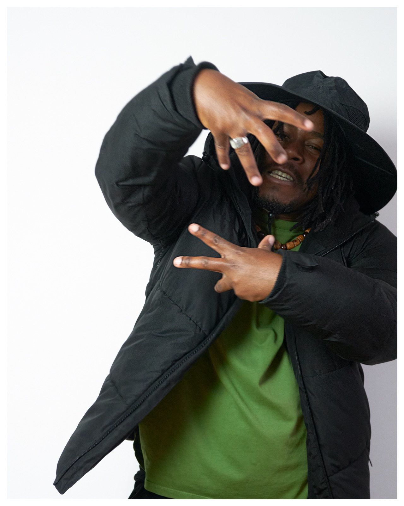
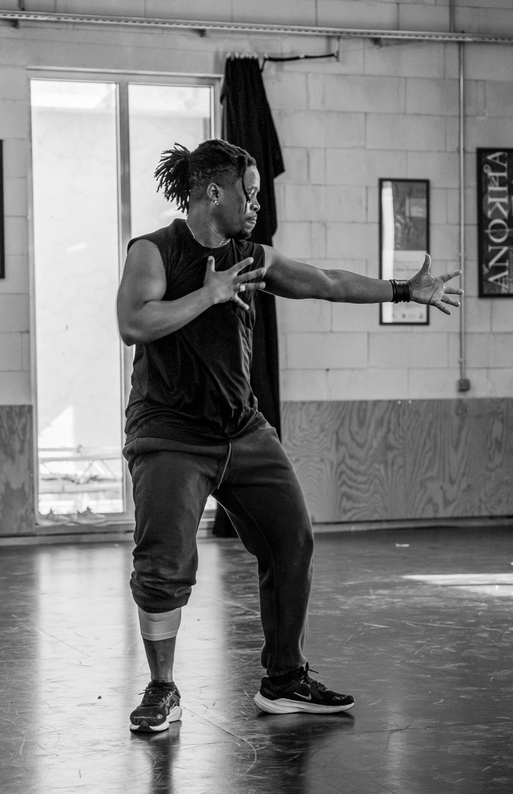
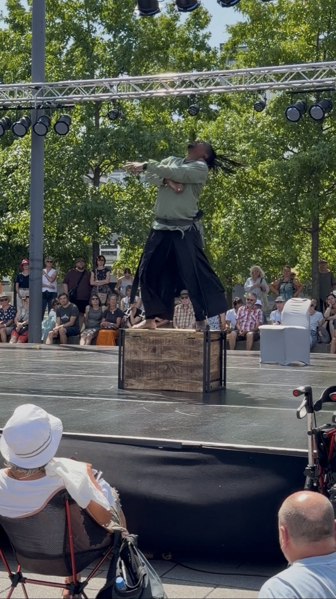

Regis Tsoumbou bakana
Danseur et chorégraphe, à la croisée du hip-hop et de la danse contemporaine.

Du hip-hop à la scène contemporaine
Danseur, chorégraphe et professeur, Régis Tsoumbou bakana découvre le hip-hop en 2008 au Gabon, dans les battles et les street events de son quartier.
Formé à l'École de Danse Afro-Contemporaine Irène Tassembedo (EDIT) à Ouagadougou, puis à l'Université Paris 8, il danse en France et à l'international et crée ses propres pièces au sein de la Compagnie DK-BEL.
Entrer dans mon univers
Des spectacles à voir, une formation pour danser, des projets à imaginer ensemble.
Spectacles
Mes créations, et mon parcours d'interprète en France et à l'étranger.
Découvrir les spectacles
NeoFlowAcademy
Ma méthode pour gagner en confiance, en expression et en création.
Découvrir la formation
Collaborations
Programmation, ateliers, résidences, projets artistiques et presse.
Travailler ensembleTransmettre, partager, explorer
« Ma vision de la danse est de transmettre mon savoir au plus grand nombre, de partager mon expérience et de permettre à chacun d'explorer son propre rapport au mouvement. »